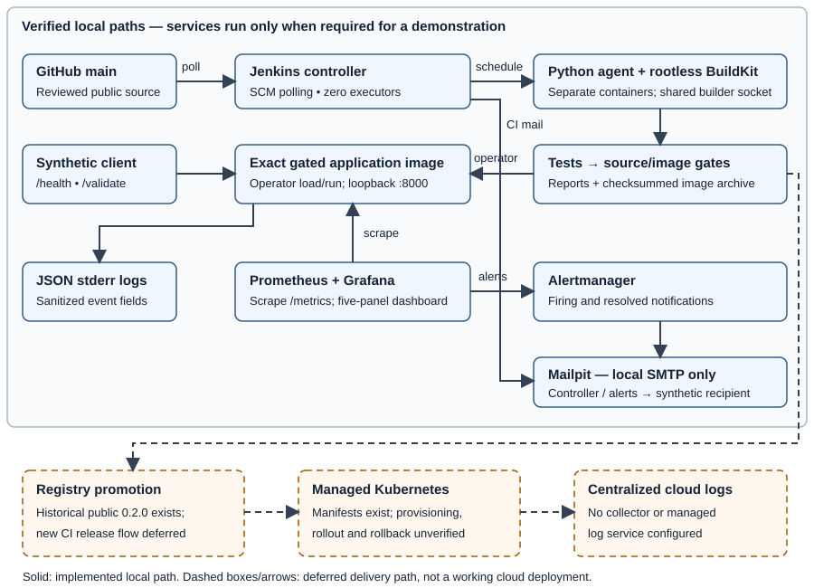

DESIGN DOCUMENT • 1 NOVEMBER 2026 • STEP 7.1 REVIEW DRAFT
A small transaction-validation API demonstrates a traceable DevOps workflow: reviewed source, deterministic tests, locked dependencies, container packaging, security gates and observable local operation. It does not transfer money, maintain balances or store transactions. Only synthetic data is used.
Scope boundary: local CI, image gating, monitoring, alerts and structured logging have execution evidence. Kubernetes manifests and a historical public multi-architecture 0.2.0 release exist, but managed-cluster deployment and centralized cloud logging remain deferred. Local demonstrations are not cloud availability or production-readiness evidence.
GET /health returns HTTP 200 when the application can serve requests. It is a liveness signal, not a payment or downstream-dependency check. GET /metrics exposes Prometheus metrics. POST /validate accepts exactly five required string fields: transaction_id, sender_id, recipient_id, amount and currency.
Pydantic rejects unknown fields, incorrect types and malformed syntax with HTTP 422 and sanitized error metadata. Identifiers are case-sensitive, 1–64 ASCII letters/digits/underscores/hyphens. No trimming, case folding or implicit numeric coercion occurs. Money is parsed from a restricted decimal string into Decimal; binary floating-point intermediates and silent rounding are excluded.
The pure service checks, in order: positive amount; amount no greater than the configured limit (default 10,000); enabled currency (default SGD/USD/HKD); at most two fractional digits; distinct sender and recipient. Every applicable rejection code is returned once in that order. HTTP 200 means evaluation completed: {"valid":true,"errors":[]} or a structured business rejection. There is no idempotency store, account lookup or duplicate detection.
api/ owns HTTP handling; schemas/ owns request/response types; services/ contains rules without FastAPI or external I/O; observability/ owns metrics and logging. Environment settings are loaded centrally and validated at startup. Invalid settings prevent startup; requests cannot override them.
| Choice | Reason and assignment alternative |
|---|---|
| Python / FastAPI / Pydantic | Compact typed API and explicit boundary validation instead of Spring Boot; preserves the required endpoint behavior. |
| uv / pytest / HTTPX2 / Ruff | Locked installation, unit/API tests and repeatable formatting/linting instead of Maven/JUnit. HTTPX2 is the reviewed compatibility migration, not an additional HTTP service. |
| Docker / Jenkins / Kubernetes manifests | Portable artifact, controlled CI execution and declarative deployment intent. No database or frontend is needed for validation alone. |

main. Jenkins polls trusted public main; anonymous source checkout needs no repository credential.Release distinction: the older public ARM64/AMD64 release 0.2.0 remains the manifest target. Later ARM64 CI archives and the logging demonstration image are separate artifacts; neither the version string nor a green build proves that the manifest runs the newer code.
Jenkins has a controller with zero executors, a Python agent and a separate rootless builder. Controller/agent credentials use distinct read-only secret mounts. The controller UI is loopback-only; the agent has no Docker daemon access. Public source reads need no SCM credential. No registry/cloud deployment credentials are supplied to the pipeline.
This remains a trusted single-operator model: agent builds can read the agent's remoting secret. Local checks do not prove production RBAC, account inventory, credential rotation or arbitrary-secret absence. Known credentials are checked for accidental exposure; reviewed evidence excludes secrets and personal data.
The demonstrated application container uses a non-root identity, read-only root filesystem, dropped capabilities, no-new-privileges and bounded CPU/memory for local demonstrations. The rootless builder has documented builder-only exceptions; its isolation must not be described as identical to the application container.
Bandit and pip-audit gate source/runtime dependencies. Trivy gates the image with fresh database-age checks and retained reports. HIGH/CRITICAL findings or invalid/incomplete scan evidence block archival. Existing LOW Bandit findings remain visible. A clean scan means no known findings in that snapshot, not proof of vulnerability absence; Trivy's third-party-SBOM caveat is retained.
| Signal | Implementation and privacy boundary |
|---|---|
| Metrics | Bounded request counts, latency, errors and validation outcomes; process CPU/RSS. No transaction/user-ID labels. Independent application registry; counters reset on restart. |
| Dashboard | Prometheus scrapes every 15 seconds. Grafana shows request rate, latency, health, memory and outcomes. Local authenticated queries and a 60-request synthetic demonstration were verified. |
| Alerts | Failed or absent application scrape persists for one minute before firing. Alertmanager sends firing/resolved messages to Mailpit. The live demonstration exercised failed scrape, not the missing-series path. |
| Application logs | JSON stderr events with UTC timestamps, bounded routes/status classes, safe codes and monotonic elapsed durations. Bodies, identifiers, headers, queries, arbitrary paths and exception text are excluded. Routine /metrics access is omitted. |
| Build notifications | Cleanup runs after artifact publication attempts. Explicit opt-in; fixed synthetic sender/recipient; plain text; one attempt; 180-second budget. Actual checkout revision is persisted for cleanup. Failed builds cannot become successful because mail fails. |
Mailpit is a local receiver, not Gmail, internet delivery or instructor acceptance. Its inbox is ephemeral: export raw receipts before shutdown. Only the controller joins the notification bridge for CI; the agent and builder do not gain that network. The non-secret JCasC bind is checked for exact source, read-only mode and matching bytes.
| Evidence | What it establishes |
|---|---|
| SCM #27, published fix bc93c0f | 655 tests; all existing gates; 33 verified artifacts; received email with exact revision; intact configuration bind. Reviewed record: evidence/task-06/step-05-fix-scm-verification.md. |
| SCM #28, evidence commit 040ac4c | Same test/gate/artifact checks and actual matching notification passed after evidence publication. Jenkins archives and local reports/step65-main-28 retain the observation; no new runtime-image claim. |
| Candidate 1a1f4a3 | Its exact gated image produced JSON logs and matching metrics for accepted/rejected/invalid synthetic requests. Sequential timestamps are not concurrent correlation IDs. |
An advisory incident-triage assistant could summarize sanitized alerts, bounded metrics, safe logs, deployment history and approved runbooks into a cited timeline and next-check suggestions. It would not receive secrets or execute remediation. Human approval, untrusted-log/prompt-injection handling, evidence citations, retention, cost and evaluation criteria must be designed in Step 7.2. No triage service or production model is currently deployed.
Managed Kubernetes provisioning, CI registry promotion, cloud logs/metrics, live rollout/rollback, provider credentials, spending limits, exposure, evaluator access and teardown remain deferred. Static manifests are not cluster evidence. Active SMTP-socket cancellation and a live notification-profile-off transition are also unverified. Presentation format and final rehearsal belong to later steps. The design does not waive these assignment requirements.